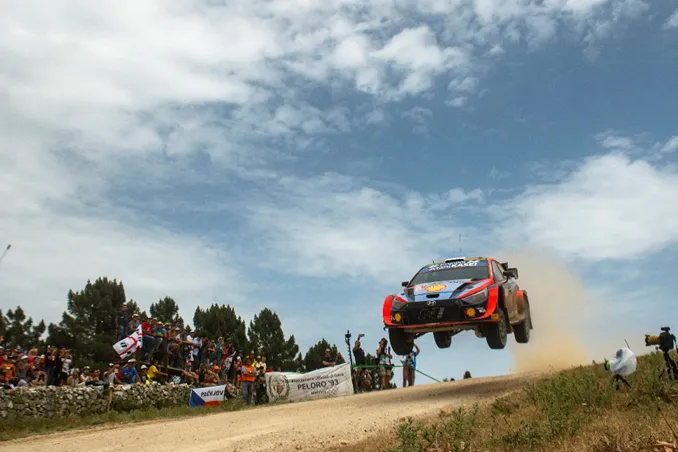
How would Rally Italia look like if it returned in San Remo ?
The WRC is back next week with Rally Italia Sardegna. Rally Sardegna has been the host of Rally Italy since 2004, hosting 18 WRC events. But before the rally was held in the Mediterranean island, it was held in the North-West of Italy, in the mountains above the costal city of San Remo.

Ott Tanak got the first win for himself and Hyundai in Sardegna last year
The switch from San Remo to Sardegna happened after 2003. The organisers had to deal with too many fans up in the mountains, and also the WRC that year had a tarmac triple header of Corsica-San Remo-Catalunya. The FIA thought the calendar had too much tarmac, and Rally Italy went to Olbia for 2004, and stayed there. But with many people today arguing that there is too much (rough) gravel on the calendar, and too little tarmac, could a return to San Remo be possible? And if so, what would the itinerary and stages look like ?
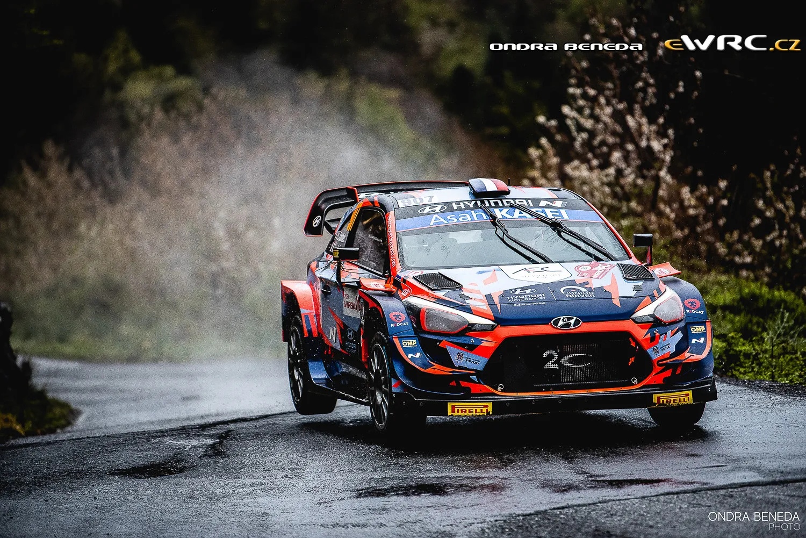
In 2021, the Hyundai team ran 4 of their i20 WRCs in San Remo as preparation for the upcoming Rally Croatia, giving us a hint of how WRC cars would handle the event nowadays
So we decided to try and make a fantasy itinerary for Rally San Remo as a WRC rally !
Thursday
Shakedown – Baiardo 3.23 km
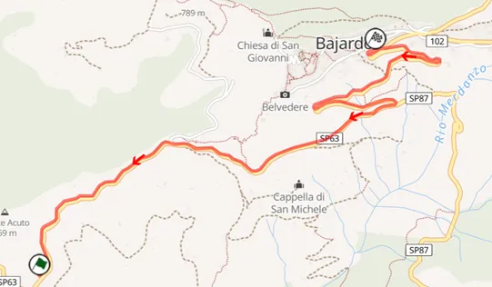
Map of the stage Poker, used in 2009
This is quite a representative stage for the rally. The stage goes uphill and ends in the city of Baiardo. The road is narrow and technical, with hairpins, as the stages goes up the mountain. The layout of this shakedown test is identical to the “Poker” stage used in Rally San Remo 2009
SS1 – Vigne di Bajardo 2.00 km
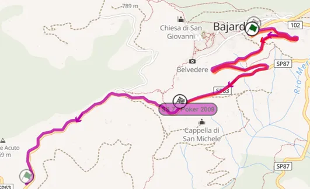
Map of SS1, it’s a reversed part of the shakedown
After the ceremonial start, the drivers head back to where the shakedown was for a small spectator stage. This stage was also the opening stage of the rally in 2022 and 2021.
Onboard of the stage: https://youtu.be/scUDM5xMNN8
Friday
SS2/SS5 – Langan – 19.93km
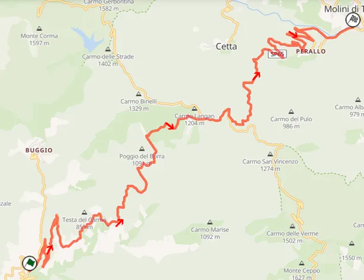
Map of the Colle Langan stage used in 2013
For the first proper stage of the rally I have put one of the all time greats. This stage climbs a mountain and the descents it. It’s a fairly slow stage, many slow corners, especially in the beginning. After the stage reaches its peak altitude at 1100m, the road becomes more high speed, and after that, it gets medium speed with a lot more hairpins as it goes down the mountain. The surface is quite broken and abrasive with leaves and dirt littering the stage as cars go through it.
Onboard of the stage (the reverse unfortunately)
SS3/SS6 – Passo Teglia – 9.17km
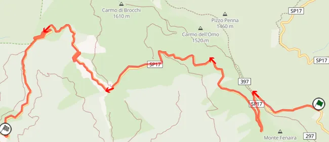
The Passo Teglia stage used in the 2022 Rally San Remo
After a very short liaison (just 3.5 km) we go to the 3rd stage. This is a very Monte Carlo esque stage. Very narrow mountain roads, with the odd old stone bridge and hairpins. This is a very slow stage (in 2022 the R5s had an average speed of 83km/h) and it could be a bit slower with my version as it goes up the mountain instead of down it. The middle of the stage especially is very narrow and technical, reminiscent of Rally Japan last year, and it becomes faster towards the end.
Onboard of the stage (again in reverse)
SS4/SS7 – San Bernardo – 19.44km
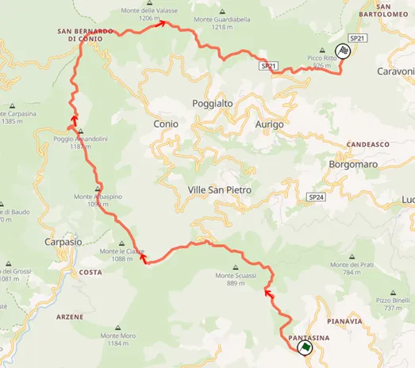
Map of the 2001 San Bernardo stage
Another iconic San Remo stage. This is a faster stage compared to the previous 2, with the stage having an average of over 100 km/h back when it was last used in this layout in 2001. The stage is again, quite narrow, especially in the beginning as it climbs up the mountain. The road is slow and very bumpy and broken, especially in the middle part of the stage, resembling Rally Croatia and Zlin. After the middle part the stage gets faster. Reaching the San Bernardo village the stage widens and gets more flowing.
SS8 – Vignai – 17.97km
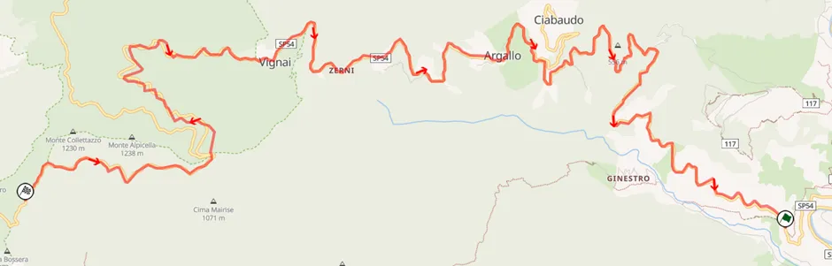
Map of the Vignai stage used in San Remo 2014
The final stage of Friday, which could be ran in the dark ! The stage goes up a mountain. The start of the stage is slow and technical, but widens up and gets faster after that. The end of the stage will need a lot of commitment from the drivers, as it is fast at parts but very narrow.
Onboard of the stage (14km version, mostly the same)
End of Leg 1
Total Leg Distance: 117.05km
Saturday, Start of Leg 2
SS9/SS12 - Colle D’Oggia – 21.52km
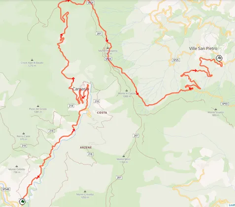
Map of the stage used in 2003, I have the reverse of this on this itinerary
The opening stage of Saturday is also famous. It starts of slow and technical, with very narrow, twisty, bumpy and broken roads. After a series of hairpins, the stage becomes faster and wider. After the stage reaches its peak altitude, it becomes again tricky and twisty as it goes down the mountain, but remains fairly wide compared to the start.
Parts of the stage
SS10/SS13 – Mini Ronde – 29.12km
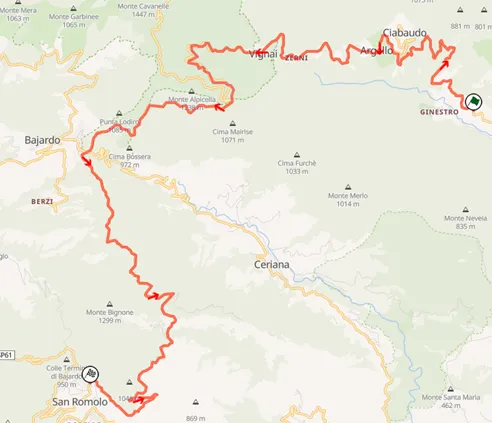
Map of the Mini Ronde stage used in 2019
Mini Ronde as the name suggests is a smaller version of the monster 40+km Ronde stage that has been used in the past. Despite its name, it is still the longest of the rally. This stage also uses parts of the Vignai stage used in the end of Friday. The stage starts off just like Vignai, after that the stage becomes narrower and bumpier, it then widens and becomes extra twisty, especially in the end, with a series of hairpins and twisty slow corners as the road goes up the mountain.
Onboard of the stage:
SS11/SS14 – Apricale – 16.73km
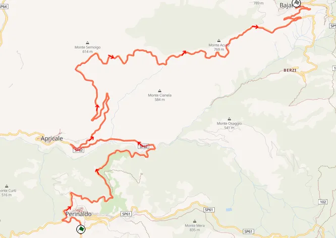
Map of the Margherita stage used in 2007
This stage uses parts of the old Baiardo stage, as well as parts of the shakedown and SS1. This stage is quite open compared to the other stages, with less trees around the road. It is more reminiscent of Roma Capitale, if that gives you a better image. The first part of the stage is medium speed, with a nice flow. As the stage goes up the mountain it becomes more twisty and technical. It widens up a bit and regains its flow as it reaches the part it shares with the shakedown stage.
End of Leg 2
Total Leg Distance: 139.74km
Sunday, Start of Leg 3
SS15 – Ponte dei Passi – 14.04km
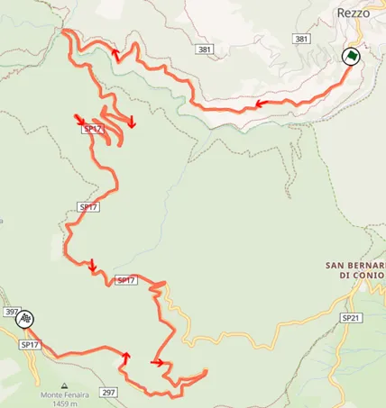
Map of the stage used in Rally delle Valli Imperiesi in 2003. Parts of it were also used in many Historic San Remo rallies, as well as old WRC rallies.
The opening stage of Sunday shares it’s end with Passo Taglia (SS3). The stage starts of fairly fast but becomes twisty and technical when it reaches a hairpin section. The stage becomes fast again and then slow again towards the end, many rhythm changes there. The end of the stage is also in a heavy forested section which means it will be extra slippery.
Onboard of the stage (also shows parts of SS3)
SS17 – Monte Ceppo – 25.08km
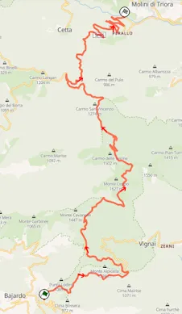
Map of the Anemone stage used in Rally San Remo 2005, the reverse of the stage is used for this.
A big stage (just one pass). This stage includes parts of a lot of stages used previously in the rally, namely Vignai Langan and Mini Ronda.
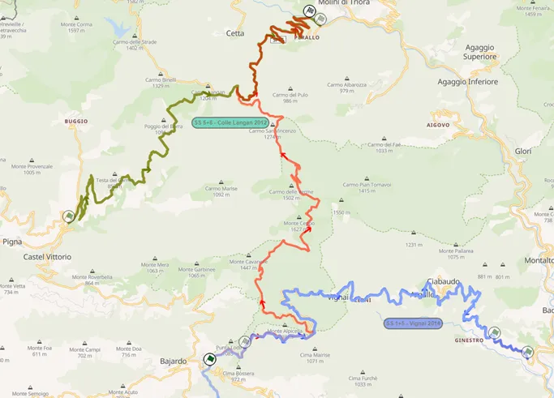
A map of all the 4 stages and their common parts
One of the faster stages of the rally, it starts off with a series of hairpins and technical sections. After that the stage becomes more fast and flowing. Towards the middle, the stage goes through a very densely forested road which narrow. The stage remains very narrow after that until the end, with a mix of fast and slow sections.
SS16/18 – San Romolo – 14.24km
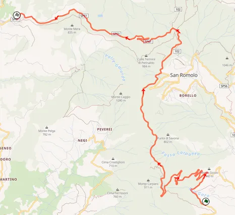
Map of the San Romolo stage used in 2019
For the power stage I have gone with a stage that’s synonymous with Rally San Remo. This is again a stage that is faster than many in this rally with it having an average speed of 90km/h in 2019. The stage starts off fast, followed by a hairpin section. After that, it becomes fast again with the drivers having to have precision and courage through the fast bits as the stage is very narrow ! Towards the end the stage widens a bit and it also goes past a tunnel. The end of the stage is downhill, so the drivers again need to be “on it”, who ever gets the powerstage bonus points will certainly have earned them !
Onboard of the powerstage
End of Leg 3
Leg Distance: 67.60km
Rally Distance: 319.39 km
Full Itinerary
Day
Stage Number
Stage Name
Distance
Thursday
SD
Baiardo
3.23
SS1
Vigne Di Bajardo
2.00
Service -> Imperia
Friday
SS2
Langan 1
19.93
SS3
Passo Teglia 1
9.17
SS4
San Bernardo 1
19.44
Service -> Imperia
Friday
SS5
Langan 1
19.93
SS6
Passo Teglia 1
9.17
SS7
San Bernardo 1
19.44
SS8
Vignai
17.97
Service -> Imperia
Leg Total Distance: 117.05 km
Saturday
SS9
Colle D’Oggia 1
21.52
SS10
Mini Ronde 1
29.12
SS11
Apricale 1
16.73
Service -> Imperia
Saturday
SS12
Colle D’Oggia 2
21.52
SS13
Mini Ronde 2
29.12
SS14
Apricale 2
16.73
Service -> Imperia
Leg Total Distance: 139.74 km
Sunday
SS15
Ponte Dei Passi
14.04
SS16
San Romolo 1
14.24
Service -> Imperia
Sunday
SS17
Monte Ceppo
25.08
SS18
San Romolo 2 [Power Stage]
14.24
Leg Total Distance: 67.60 km
Rally Total Distance: 319.39 km
Thank you very much for reading all this if you made it this far, as always let us know what you thought in the replies.
I think the dream of a WRC return to San Remo is fading away, since other tarmac rounds like Rally Roma Di Capitale and Rally di Alba have overtaken it in "popularity" let's say, but it would be without a doubt the place that i would want the most to host a WRC rally in Italy.


Comments